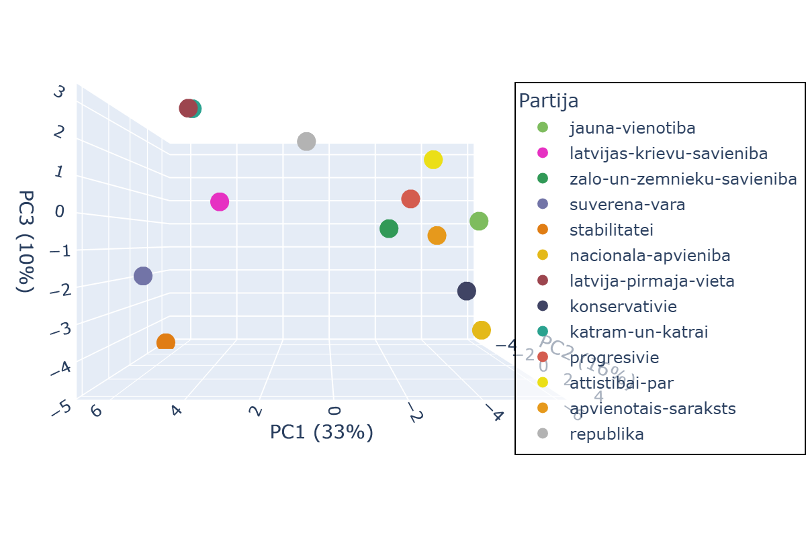
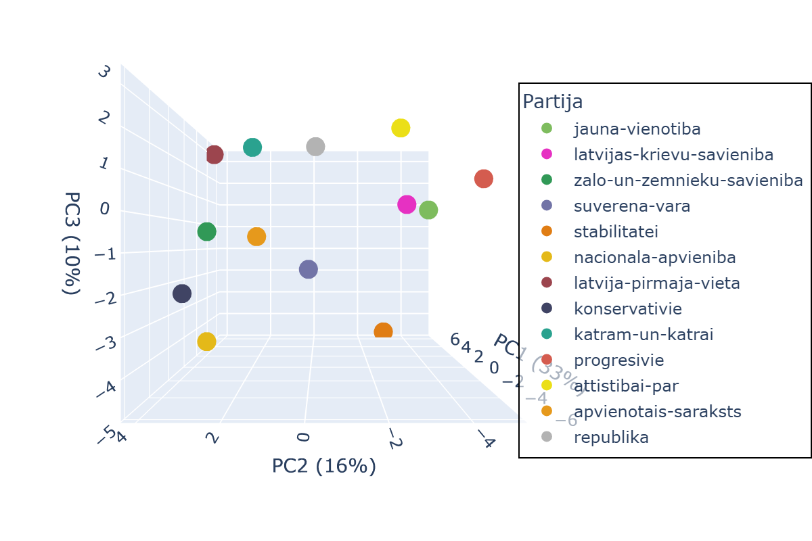

NB: 12/11/2025 optimizējot datu izguves procesu no lsm.lv, atklāta kļūda sākotnēji izmantotajos partijas "Konservatīvie" datos. Pēc kļūdas labojuma pirmās trīs galveno komponentu asis izskaidro 59% variācijas, un partijas "Konservatīvie" atbilžu projekcija šajās asīs ir tuvāka AS, ZZS, NA, nevis LPV, KK.
Partiju atbildes 2022.gada partiju šķirotavā
No 19 partijām, kas kandidēja 2022.gada vēlēšanās, uz LSM.lv sagatavotajiem 58 jautājumiem atbildēja 13 partijas.
Zemāk atainota partiju atbilžu projekcija pirmo trīs galveno komponentu (principal component, "PC") asīs, kas kopīgi paskaidro 59% no variācijas partiju atbildēs.
Galveno komponentu analīze (principal component analysis) mūsu 58-dimensionālajos datos atrod savstarpēji perpendikulāras asis, pa kurām partiju atbilžu datos ir vislielākā dispersija. Katra ass atspoguļo lineāru 58-dimensiju (jautājumu) kombināciju, kurā katram no šķirotavas jautājumiem ir savs svars. Šī analīzes metode a priori nezina neko par partiju ideoloģiju; tā balstās tikai uz līdzībām partiju atbildēs.
Katru no šīm trim galveno komponentu asīm lielākā vai mazākā mērā ietekmē liels skaits šķirotavas jautājumu, tāpēc šo asu nozīmi nav viegli interpretēt.
Zemāk atainots katra šķirotavas jautājuma svars. Jo lielāks absolūtais svars (pozitīvs vai negatīvs), jo lielāka ietekme uz konkrēto asi. Pozitīvs svars nozīmē, ka pozitīva atbilde ("pilnībā piekrītu" vai "daļēji piekrītu") uz jautājumu augstāk esošajā 3D grafikā virza partijas projekciju uz attiecīgās ass pozitīvo skaitļu virzienā.
PC1: Partijas atrašanās vietu uz šīs ass visbūtiskāk ietekmē atbildes uz jautājumiem par (1) valsts atbalstu AirBaltic, (2) uzturēšanās atļaujām trešo valstu investoriem, (3) okupekļa nojaukšanu, (4) Latvijas lomu globālu problēmu risināšanā, kā arī (5) attieksmi pret bioloģisko un konvencionālo lauksaimniecību.
Pozitīvo skaitļu (SV, ST, LPV, LKS, KK) virzienu visvairāk veicina šādas idejas:
- Latvijas valdības līdzšinējais finansiālais atbalsts lidsabiedrībai "airBaltic" ir bijis pārmērīgs;
- Latvijai ir vajadzīga programma, kas ļauj ārvalstu pilsoņiem iegūt uzturēšanās atļauju Latvijā tad, ja viņi investē Latvijas ekonomikā;
- Nav jānojauc piemineklis Rīgā, Uzvaras parkā;
- Latvijai nav vairāk jāiesaistās globālu (visu planētu skarošu) problēmu risināšanā;
- Bioloģiskajai (organiskajai) lauksaimniecībai ir jāsniedz lielāks atbalsts nekā konvencionālajai (parastajai) lauksaimniecībai.
Vispretējākos viedokļus šiem paudušas redzam arī JV, NA un Konservatīvie. Negatīvos skaitļos redzam arī AP, PRO, AS un ZZS.

PC2: Šo asi visvairāk ietekmē jautājumi par cilvēktiesībām, tiesiskumu un attieksmi pret Eiropas Savienību, taču būtiski ir arī saimnieciski jautājumi, kā pašvaldību ienākuma nodokļa piesaistīšana darba vietai.
Pozitīvo skaitļu (LPV, Konservatīvo, ZZS) virzienu visvairāk veicina šādas idejas:
- Heteroseksuālajiem pāriem ir jābūt plašākām tiesībām nekā viendzimuma pāriem;
- Latvijai nav jāratificē Stambulas konvencija (par vardarbības pret sievietēm un vardarbības ģimenē novēršanu un apkarošanu);
- Latvijai nav svarīgi spēcināt Eiropas Savienību ar jaunām funkcijām (pienākumiem) un lielāku budžetu;
- Satversmes tiesas spriedumi nav jāpilda, ja deputāti un daļa sabiedrības tiem nepiekrīt;
- Latvijā vajadzētu krimināli vai administratīvi sodīt par marihuānas lietošanu;
- Par pašvaldības koplietošanas infrastruktūru nav jāmaksā no to iedzīvotāju nodokļiem, kuri strādā attiecīgajā pašvaldībā, ja viņi dzīvo citur.
Pozitīvos skaitļos redzam arī Gobzema partiju, NA un AS. Vistālāk negatīvo skaitļu virzienā ir PRO un LKS, bet negatīvi skaitļi ir arī ST, JV, AP. SV ir tuvu nullei.

PC3: Šo asi ietekmē raibs jautājumu spektrs. Daļa svarīgo jautājumu skar nepilsoņu tiesības un valsts attieksmi pret krieviju, taču relatīvi liels svars ir arī jautājumiem par dzimumu līdztiesību, eitanāziju, marihuānas lietotāju sodāmību.
Pozitīvo skaitļu (Gobzema partija, LPV, AP) virzienu visvairāk veicina šādas idejas:
- Latvijā nav vajadzīgas "sarkanās līnijas" valdības koalīciju veidošanā (partiju atteikšanās sadarboties ar kādām citām partijām);
- Valstij ir jāpublicē to iestāžu, uzņēmumu, organizāciju nosaukumi, kur sievietēm par līdzīgu darbu tiek maksāta ievērojami zemāka atlīdzība nekā vīriešiem;
- Latvijai ir jāsniedz patvērums cilvēkiem, kuri politisko iemeslu dēļ tiek vajāti Krievijā un Baltkrievijā;
- Pašvaldības ikdienas darbā (piemēram, iedzīvotāju konsultatīvajās padomēs, sabiedriskajās apspriedēs, līdzdalības budžeta veidošanā) ir jāiesaista visi vietējie iedzīvotāji, ne tikai Latvijas pilsoņi;
- Latvijā ir jāatļauj eitanāzija kā brīvprātīga izvēle neārstējami slimiem pacientiem;
- Latvijā nevajadzētu krimināli vai administratīvi sodīt par marihuānas lietošanu;
- Skolēniem skolās ir jāapgūst ieroču lietošanas prasmes;
- Nav jāsamazina pret Krieviju un Baltkrieviju noteiktās sankcijas.
Pozitīvos skaitļos redzam arī Progresīvos. Vistālāk negatīvo skaitļu virzienā ir ST un NA, bet negatīvi skaitļi ir arī Konservatīvajiem un SV. Tuvu nullei negatīvajā pusē ir ZZS un AS, savukārt tuvu nullei pozitīvajā pusē ir JV un LKS.